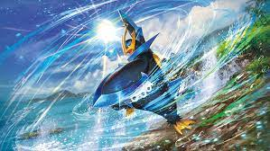

Torterra est un gros Pokémon quadrupède qui ressemble à une tortue, avec une large carapace qui recouvre son dos, sur laquelle se trouve un arbre qui ressemble à un chêne, avec une parcelle de terre à son pied, ainsi que trois excroissances triangulaires qui ressemblent à des menhirs. Un rebord blanc encercle la carapace et forme un diamant au-dessus du front de Torterra. Son corps semble sectionné en deux parties, avec sa moitié supérieure verte et sa moitié inférieure marron. Sa bouche est dentelée. Il a au bout du museau un bec marron foncé, qui lui donne l'apparence d'une tortue serpentine. Sa mâchoire inférieure est verte avec de grosses piques sortant de ses joues. Ses petits yeux rouges sont encerclés de noir. Ses jambes sont trapues et ont chacune quatre orteils qui ressemblent à des pierres : trois à l'avant et un à l'arrière.
L'apparence de Torterra est inspirée de la tortue serpentine et de l'ankylosaure. Ses saillies ressemblant à des piques et des cornes peuvent également venir des espèces de tortues éteintes Meiolania et Proganochelys. Son concept peut être inspiré de nombreuses mythologies imaginant une tortue géante portant le monde sur son dos, ou de la Tortue noire de la mythologie chinoise.
La grande carapace de Torterra accueille de nombreux petits Pokémon, qui s'y rassemblent et y construisent leur nid. Certains même y naissent et y passent leur vie entière. Il arrive aux Torterra de migrer pour trouver de l'eau, ce qui donne l'impression d'une forêt mouvante. Cependant, il est le plus souvent immobile.

Pingoléon est un grand Pokémon bleu marine qui a l'apparence d'un manchot. Il a un large bec jaune qui s'étend en trois excroissances pointues qui forment un trident, entre lesquelles on peut voir deux yeux bleus. Il a un motif bleu en forme de couronne au-dessus des yeux et un marquage blanc qui ressemble à un jabot le long du buste. Une excroissance bleue crée une sorte de cravate autour de son cou et descend le long de son torse et de son ventre. Il a dans le dos deux bosses dorées et une nageoire bleue qui forme sa queue. Ses pieds sont jaunes et palmés avec trois orteils chacun et des plumes ébouriffées sur les jambes. Ses ailes sont grandes et bordées de bleu et ressemblent à des palmes. Il a trois griffes dorées sur chaque aile.
Pingoléon est inspiré du Manchot empereur, mais également de l'imagerie de l'empereur, avec sa couronne et son apparence royale, et plus particulièrement de Napoléon Bonaparte dont il tire son nom. La partie noire de son crâne fait également référence à la coupe de cheveux de Napoléon Bonaparte. De plus, sa couronne a l'apparence d'un trident, outil de pêche et arme de prédilection du dieu grec Poséidon. Il a également quelques ressemblances avec le Gorfou de Schlegel.
Pour Pingoléon, de grandes cornes sont symboles de pouvoir et de force. Selon le Pokédex, le chef possède un trident plus grand que les autres membres de la colonie. Le bout de ses ailes peut trancher de la glace, et Pingoléon n'hésite pas à les utiliser contre qui ou quoi que ce soit qui entache sa fierté.
Simiabraz est inspiré du singe. Le pelage de ses membres est orangé tandis que celui de son torse, de sa tête et de ses pieds est blanc. Il possède des protections jaunes avec un motif en spirale au niveau de ses poignets, épaules, genoux, ainsi que sur les côtés de son buste. Sa crinière est enflammée. Ses doigts et orteils sont bleu foncé. Contrairement à ses sous-évolutions, sa queue ne produit plus de flamme.
Dans Légendes Pokémon : Arceus, ce Pokémon est trouvable à l'état sauvage uniquement sous sa forme Baron. Il a donc par défaut un comportement agressif et attaque le protagoniste dès qu'il le voit.